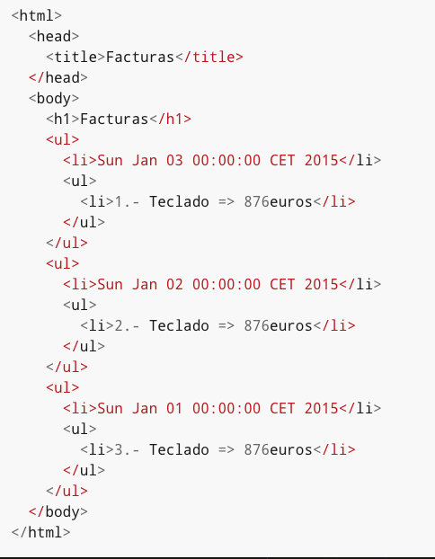

Framework Grails
Sesión 2: Aspectos avanzados del Lenguaje Groovy. Metaprogramación.
Índice
- Closures
- Groovy como lenguaje orientado a objetos
- Metaprogramación
- Groovy Builders
- Tratamiento de archivos XML
Closures
Un closure es un trozo de código empaquetado como un objeto y definido entre llaves. Actúa como un método, al cual se le pueden pasar parámetros y pueden devolver valores. Es un objeto normal y corriente al cual se pasa una referencia de la misma forma que se le pasa a cualquier otro objeto.
Declarando closures
def nombre = 'Juan'
def imprimeNombre = { println "Mi nombre es $nombre"}
imprimeNombre()
nombre = "Yolanda"
imprimeNombre()
Parámetros en los closures
def imprimeNombre = { nombre -> println "Mi nombre es ${nombre}"}
imprimeNombre("Juan")
imprimeNombre "Yolanda" //Los paréntesis son opcionales
//Con múltiples parámetros
def quintetoInicial = { base, escolta, alero, alapivot, pivot -> println "Quinteto inicial compuesto por: $base, $escolta, $alero, $alapivot y $pivot"}
quintetoInicial "Calderón", "Navarro", "Jiménez", "Garbajosa", "Pau Gasol"
Parámetro implícito
def imprimeNombre = { println "Mi nombre es $it" }
imprimeNombre("Juan")
imprimeNombre "Yolanda"
Closure desde un método
class MetodoClosureEjemplo {
int limite
MetodoClosureEjemplo (int limite){
this.limite = limite
}
boolean validar (String valor){
return valor.length() <= limite
}
}
MetodoClosureEjemplo primero = new MetodoClosureEjemplo(8)
MetodoClosureEjemplo segundo = new MetodoClosureEjemplo(5)
Closure primerClosure = primero.&validar
def palabras = ["cadena larga", "mediana", "corta"]
assert "mediana" == palabras.find(primerClosure)
assert "corta" == palabras.find(segundo.&validar)
Multimétodos
class MultimetodoClosureEjemplo{
int metodoSobrecargado(String cadena){
return cadena.length()
}
int metodoSobrecargado(List lista){
return lista.size()
}
int metodoSobrecargado(int x, int y){
return x * y
}
}
MultimetodoClosureEjemplo instancia = new MultimetodoClosureEjemplo()
Closure multiclosure = instancia.&metodoSobrecargado
assert 21 == multiclosure("una cadena cualquiera")
assert 4 == multiclosure(['una','lista','de','valores'])
assert 21 == multiclosure(7, 3)
Los closures como objetos
def quintetoInicial = ["Calderón", "Navarro", "Jiménez", "Garbajosa", "Pau Gasol"]
salida = ''
quintetoInicial.each {
salida += it +', '
}
assert salida.take(salida.size()-2) == 'Calderón, Navarro, Jiménez, Garbajosa, Pau Gasol'
Usos de los closures
def suma = { x, y ->
x + y
}
assert 10 == suma(7,3)
assert 13 == suma.call(7,6)
Closure como parámetro
def campodepruebas(repeticiones, Closure proceso){
inicio = System.currentTimeMillis()
repeticiones.times{proceso(it)}
fin = System.currentTimeMillis()
return fin - inicio
}
lento = campodepruebas(999999) { (int) it / 2 }
rapido = campodepruebas(999999) { it.intdiv(2) }
//El método lento es al menos 3 más lento que el rápido
assert rapido * 3 < lento
Valores por defecto
def suma = { x, y=3 ->
suma = x + y
}
assert 7 == suma(4,3)
assert 7 == suma(4)
Más métodos de los closures
def llamador (Closure closure){
closure.getParameterTypes().size()
}
assert llamador { uno -> } == 1
assert llamador { uno, dos -> } == 2
Currying
def suma = { x, y -> x + y }
def sumaUno = suma.curry(1)
assert suma(4,3) == 7
assert sumaUno(5) == 6
Valores devueltos en los closures
assert [2,4,6] == [1,2,3].collect { it * 2 } //Implícita
assert [2,4,6] == [1,2,3].collect { return it * 2 } //Explícita
Salir de un closure de forma prematura
assert [2,2, 6] == [1,2,3].collect {
if (it%2==1)
return it * 2
return it
}
Groovy como lenguaje orientado a objetos
- Clases y scripts
- Organizando nuestras clases y scripts
- Características avanzadas del modelo orientado a objetos
- GroovyBeans
- Otras características interesantes de Groovy
Clases
- Definición similar a Java
- Palabra reservada class
- Constructores y métodos
Scripts
- Definición de variables
- Métodos
- Declaración de clases
Modificadores
- private
- protected
- public
- final
- static
Acceso a propiedades de las clases
- objeto.campo
- objeto['campo']
Ejemplo de acceso a propiedades de las clases
class miClase {
public campo1, campo2, campo3, campo4 = 0
}
def miobjeto = new miClase()
miobjeto.campo1 = 2
assert miobjeto.campo1 == 2
miobjeto['campo2'] = 3
assert miobjeto.campo2 == 3
for(i=1;i<=4;i++)
miobjeto['campo'+i] = i - 1
assert miobjeto.campo1 == 0
assert miobjeto['campo2'] == 1
assert miobjeto.campo3 == 2
assert miobjeto['campo4'] == 3
Ejemplo clase en Groovy
class MiClase{
static main(args){
def algo = new MiClase()
algo.metodoPublicoVacio()
assert "hola" == algo.metodoNoTipado()
assert 'adios' == algo.metodoTipado()
metodoCombinado()
}
void metodoPublicoVacio(){
;
}
def metodoNoTipado(){
return 'hola'
}
String metodoTipado(){
return 'adios'
}
protected static final void metodoCombinado(){
}
}
Diferencias
- Método main sin modificador public
- Los parámetros del método no son de tipo String[]
Protección con el operador ?.
def mapa = [a:[b:[c:1]]]
assert mapa.a.b.c == 1
//Protección con cortocircuito
if (mapa && mapa.a && mapa.a.x){
assert mapa.a.x.c == null
}
//Protección con un bloque try/catch
try{
assert mapa.a.x.c == null
} catch (NullPointerException npe){}
//Protección con el operador ?.
assert mapa?.a?.x?.c == null
Constructores automáticos en Groovy
- Forma tradicional con parámetros en orden
- Palabra reservada as
- Lista de parámetros
Constructores automáticos en Groovy
class Libro{
String titulo, autor
Libro(titulo, autor){
this.titulo = titulo
this.autor = autor
}
}
//Forma tradicional
def primero = new Libro('Groovy in action', 'Dierk König')
//Mediante la palabra reservada as y una lista de parámetros
def segundo = ['Groovy in action','Dierk König'] as Libro
//Mediante una lista de parámetros
Libro tercero = ['Groovy in action','Dierk König']
assert primero.getTitulo() == 'Groovy in action'
assert segundo.getAutor() == 'Dierk König'
assert tercero.titulo == 'Groovy in action'
Constructores automáticos en Groovy
class Libro {
String titulo, autor
}
def primero = new Libro()
def segundo = new Libro(titulo: 'Groovy in action')
def tercero = new Libro(autor: 'Dierk König')
def cuarto = new Libro(titulo: 'Groovy in action', autor: 'Dierk König')
assert primero.getTitulo() == null
assert segundo.titulo == 'Groovy in action'
assert tercero.getAutor() == 'Dierk König'
assert cuarto.autor == 'Dierk König'
Organizando nuestras clases y scripts
- Relación entre clases y ficheros
- Paquetes y organización jerárquica
- Alias
Relación entre clases y ficheros
- Si el fichero .groovy no tiene la declaración de ninguna clase, éste se trata como si fuera un _script_ y automáticamente se genera una clase de tipo _Script_ con el mismo nombre que el fichero .groovy
- Si el fichero .groovy contiene una sola clase definida con el mismo nombre que el fichero, la relación es la misma que en Java, es decir, un fichero .class por cada fichero .groovy
Relación entre clases y ficheros
- Si el fichero .groovy contiene más de una clase definida, .groovyc, creará tantos ficheros .class como sean necesarios para cada clase definida en el fichero .groovy.
- Un fichero Groovy puede mezclar la definición de clases con el código script. En este caso, el código script se convierte en la clase principal a ejecutar, con lo que no se puede declarar una clase con el mismo nombre que el fichero fuente.
Organización de paquetes
Idéntica organización que Java
Archivos compilados
- Si no es necesario compilar
- ¿Dónde busca entonces los archivos "compilados"
- En el classpath, buscará archivos compilados y sin compilar
- Si está el archivo compilado y sin compilar, se escoge el modificado más recientemente
Paquetes en Groovy
package negocio
class Cliente {
String nombre, producto
Direccion direccion = new Direccion()
}
class Direccion {
String calle, ciudad, provincia, pais, codigopostal
}
Referencia a librerías en Groovy
import negocio.*
def clienteua = new Cliente()
clienteua.nombre = 'Universidad de Alicante'
clienteua.producto = 'Pizarras digitales'
assert clienteua.getNombre() == 'Universidad de Alicante'
Alias de paquetes en Groovy
import agenteexterno1.OtraClase as OtraClase1
import agenteexterno2.OtraClase as OtraClase2
def otraClase1 = new OtraClase1()
def otraClase2 = new OtraClase2()
Características avanzadas del modelo orientado a objetos
- Herencia
- Interfaces
- Multimétodos
Herencia
- Posibilidad de añadir campos y métodos a una clase a partir de una clase base.
- Groovy permite herencia igual que Java
- Groovy puede extender una clase Java
- Java puede extender una clase Groovy
Interfaces
- Clase especial en la que todos sus métodos son abstractos y públicos pero sin implementar
- Los métodos están desarrollados en la clase que implementa esta interface
- Los interfaces son lo más parecido a la herencia múltiple ya que una clase puede implementar más de una clase pero sólo extender una.
Multimétodos
- El tipo de los datos pasados se eliga de forma dinámica cuando se pasan como parámetros a los métodos
- Ésto se conoce como multimétodo
def multimetodo(Object o) { return 'objeto' }
def multimetodo(String o) { return 'string' }
Object x = 1
Object y = 'foo'
assert 'objeto' == multimetodo(x)
assert 'string' == multimetodo(y)//En Java, esta llamada hubiera devuelto la palabra 'objeto'
GroovyBeans
public class Libro implements java.io.Serializable {
private String titulo;
public String getTitulo(){
return titulo;
}
public void setTitulo(String valor){
titulo = valor;
}
}
class Libro implements java.io.Serializable {
String titulo
}
Diferencias entre JavaBean y GroovyBean
- Evidentes diferencias
- Nos ahorra tener que reescribir constructores al añadir una nueva propiedad
- Setters y getters generados al vuelo
- Operador .
Getters automáticos
class Persona {
String nombre, apellidos
String getNombreCompleto(){
return "$nombre $apellidos"
}
}
def juan = new Persona(nombre:"Juan")
juan.apellidos = "Martínez"
assert juan.nombreCompleto == "Juan Martínez"
Acceso a la propiedad original
class DobleValor {
def valor
void setValor(valor){
this.valor = valor
}
def getValor(){
valor * 2
}
}
def doble = new DobleValor(valor: 300)
assert 600 == doble.getValor()
assert 600 == doble.valor
assert 300 == doble.@valor
Operador *
def getLista(){
return [1,2,3,4,5]
}
def suma(a, b, c, d, e){
return a + b + c + d + e
}
assert 15 == suma(*lista)
Metaprogramación
La metaprogramación consiste en escribir programas que escriben o manipulen otros programas (o a sí mismos) como datos, o que hacen en tiempo de compilación parte del trabajo que, de otra forma, se haría en tiempo de ejecución. Esto permite al programador ahorrar tiempo en la producción de código.
Características de Groovy
- Todo método de cualquier objecto invocado desde Groovy pasa por un intermediario (MOP - MetaObjectProtocol)
- Posibilidad de interceptar llamadas a métodos o acceso a propiedades
- Crear y modificar métodos en tiempo de ejecución para por ejemplo extender directamente la clase java.lang.String
Clase Expando
Clase especial que nos permite añadir métodos, constructores, propiedades y métodos estáticos utilizando una sintaxis basada en closures.
def miExpando = new Expando()
miExpando.factor = 5
miExpando.multiplica = { a -> factor * a }
assert miExpando.multiplica(4) == 20
assert miExpando.resto == null
Clase Expando
miExpando.factor = 5
//Realmente...
miExpando.setProperty('factor',5)
miExpando.factor
//Realmente...
miExpando.getProperty('factor')
miExpando.multiplica(4)
//Realmente...
miExpando.invokeMethod('multiplica', [4] as Object[])
Clase Expando
class MiExpando {
private dynamicProperties = [:]
void setProperty(String propName, val){
dynamicProperties[propName] = val
}
def getProperty(String propName) {
dynamicProperties[propName]
}
def methodMissing(String methodName, args){
def prop = dynamicProperties[methodName]
if (prop instanceof Closure) {
return prop(*args)
}
}
}
def miExpando = new MiExpando()
miExpando.a = 4
miExpando.b = 5
miExpando.suma = { x, y -> x + y }
assert miExpando.a == 4
assert miExpando.b == 5
assert miExpando.suma(4,5)
Objeto delegate
Todo closure tiene asociado un objeto conocido como delegate que puede ser cualquier tipo de objeto y es la forma de tener un objeto que responda a determinadas llamadas a métodos y propiedades.
def miclosure = {
concat " Mundo!"
}
def s = "Hola"
miclosure.delegate = s
assert miclosure.call() == "Hola Mundo!"
Objeto delegate
¿qué pasaría si tuviéramos un método concat(String)? ¿Qué método se ejecutaría al realizar la llamada desde el closure?
def concat(String arg) {
return "Concat llamado con arg = $arg"
}
def miclosure = {
concat " Mundo!"
}
def s = "Hola"
miclosure.delegate = s
assert miclosure.call() == "Concat llamado con arg = Mundo!"
Estrategías de resolución
- OWNER_FIRST (por defecto)
- DELEGATE_FIRST
- OWNER_ONLY
- DELEGATE_ONLY
Objeto delegate
def concat(String arg) {
return "Concat llamado con arg = $arg"
}
def miclosure = {
concat " Mundo!"
}
def s = "Hola"
miclosure.delegate = s
assert miclosure.resolveStrategy == Closure.OWNER_FIRST
assert miclosure.call() == "Concat llamado con arg = Mundo!"
miclosure.resolveStrategy = Closure.OWNER_FIRST
assert miclosure.call() == "Concat llamado con arg = Mundo!"
miclosure.resolveStrategy = Closure.DELEGATE_FIRST
assert miclosure.call() == "Hola Mundo!"
miclosure.resolveStrategy = Closure.OWNER_ONLY
assert miclosure.call() == "Concat llamado con arg = Mundo!"
miclosure.resolveStrategy = Closure.DELEGATE_ONLY
assert miclosure.call() == "Hola Mundo!"
Objeto delegate
El objeto delegate por defecto de cualquier closure siempre es el propietario del closure.
MetaClass
- Toda clase creada en Groovy tiene un objeto asociado conocido como metaClass
- Este objeto es del tipo MetaClassImpl
- Podremos extender en tiempo de ejecución cualquier clase, como por ejemplo java.lang.String
MetaClass
def textoLargo = """La metaprogramación consiste en escribir programas que escriben o manipulan otros programas
(o a sí mismos) como datos, o que hacen en tiempo de compilación parte del trabajo que, de
otra forma, se haría en tiempo de ejecución. Esto permite al programador ahorrar tiempo en
la producción de código."""
def textoCorto = "La metaprogramación consiste en escribir programas que escriben o manipulan otros programas"
assert textoLargo instanceof java.lang.String
assert textoCorto instanceof java.lang.String
String.metaClass.cortaLosPrimeros140Caracteres = {
delegate.size() >= 140 ? "${delegate.take(137)}..." : delegate
}
println textoLargo.cortaLosPrimeros140Caracteres()
println textoCorto.cortaLosPrimeros140Caracteres()
MetaClass
- Los objetos también el objeto metaClass
- Nos permitirá modificar únicamente el comportamiento de este objeto y no de toda la clase
- Muy útil a la hora de realizar tests unitarios
MetaClass
def texto1 = "texto 1"
def texto2 = "texto 2"
texto1.metaClass.foo = {
"${delegate}foo"
}
assert texto1.foo() == "texto 1foo"
try {
assert texto2.foo() == "texto 2foo"
} catch (MissingMethodException mme) {
println "El método foo no existe"
}
MetaClass
También podemos sobreescribir métodos ya existentes
def texto = "En Groovy podemos sobreescribir métodos ya existentes"
def textoZeroBased = texto.substring(0)
String.metaClass.substring = { int beginIndex ->
delegate[beginIndex-1..delegate.size()-1]
}
def textoOneBased = texto.substring(1)
assert textoOneBased == textoZeroBased
String.metaClass = null
MetaClass
Para sobrecargar métodos estáticos
String.metaClass.'static'.valueOf = { Boolean b ->
b ? "false" : "true"
}
assert "false" == String.valueOf(true)
assert "true" == String.valueOf(false)
Groovy Builders
- Facilita determinadas tareas complejas
- Markup Builder
- JsonBuilder
Markup Builder
- Formato XML altamente extendido para el intercambio de información entre aplicaciones
- Se intenta facilitar la escritura y lectura del código que genera el XML
Generar XML
def builder = new groovy.xml.MarkupBuilder()
def facturas = builder.facturas {
for (dia in 1..3) {
factura(fecha: new Date() - dia) {
item(id:dia){
producto(nombre: 'Teclado', euros:876)
}
}
}
}
facturas
XML generado
-
-
-
Markup Builder
- Código generador muy limpio
- Tabulado prácticamente idéntico
- Facilita la lectura por parte de terceros
HTML generado

Generar HTML
def builder = new groovy.xml.MarkupBuilder()
builder.html {
head {
title 'Facturas'
}
body {
h1 'Facturas'
for (dia in 1..3){
ul{
li (new Date() - dia).toString()
ul {
li "$dia.- Teclado => 876euros"
}
}
}
}
}
Generar HTML
- Código HTML compatible con los estándares
- Conversión automática de determinados caracteres como <
Json Builder
def builder = new groovy.json.JsonBuilder()
def root = builder.teachers {
professor {
firstName 'Fran'
lastName 'Garcia'
address(
city: 'Oxford',
country: 'UK',
zip: 12345,
)
married true
modules 'Groovy','Grails'
}
}
assert root instanceof Map
assert builder.toString() == '{"teachers":{"professor":{"firstName":"Fran","lastName":"Garcia","address":{"city":"Oxford","country":"UK","zip":12345},"married":true,"modules":["Groovy","Grails"]}}}'